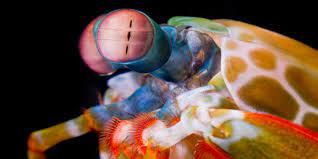

Fatos sobre o Stomatopoda
informações gerais
Os olhos são testemunhos da criatividade da evolução. Todos eles fazem as mesmas coisas básicas - detectam a luz e a convertem em sinais elétricos - mas de uma variedade tão maravilhosa de maneiras. Existem olhos simples e compostos, lentes bifocais e rochosas , espelhos e fibras ópticas . E há olhos que são tão estranhos, tão constantemente surpreendentes, que após décadas de pesquisa, os cientistas mal descobriram como eles funcionam, muito menos por que evoluíram dessa maneira. Para encontrá-los, você precisa dar um mergulho. Seu nome científico é Odontodactylus scyllarus,

| Reino | Filo | Subfilo | Classe | Subclasse: | Ordem |
|---|---|---|---|---|---|
| Animalia | Arthropoda | Crustacea | Malacostraca | Hoplocarida | Stomatopoda -1817 |
Fatos interessantes sobre o Stomatopoda
Os olhos são testemunhos da criatividade da evolução. Todos eles fazem as mesmas coisas básicas - detectam a luz e a convertem em sinais elétricos - mas de uma variedade tão maravilhosa de maneiras. Existem olhos simples e compostos, lentes bifocais e rochosas , espelhos e fibras ópticas . E há olhos que são tão estranhos, tão constantemente surpreendentes, que após décadas de pesquisa, os cientistas mal descobriram como eles funcionam, muito menos por que evoluíram dessa maneira. Para encontrá-los, você precisa dar um mergulho.
Este é o olho de um camarão mantis - um animal marinho que não é um mantis nem um camarão, mas um parente próximo de caranguejos e lagostas. É um olho composto, feito de milhares de pequenas unidades que detectam a luz de forma independente. Aqueles na banda média - a faixa central que você pode ver na foto - são especiais. São eles que deixam o animal ver as cores.

A incrivel visão do Stomatopoda
Thoen concentrou-se nos receptores que detectam cores do vermelho ao violeta – o mesmo arco-íris que podemos ver. Mas esses animais ultraviolentos também podem ver ultravioleta (UV). O camarão mantis, por exemplo, tem seis fotorreceptores dedicados a essa parte do espectro, cada um sintonizado em um comprimento de onda diferente. Esse é o sistema de detecção de UV mais complexo encontrado na natureza. Michael Bok , da Universidade de Maryland, queria saber como funciona.
Como nós, os camarões mantis enxergam cores com a ajuda de proteínas sensíveis à luz chamadas opsinas. Estes formam a base de pigmentos visuais que reagem a diferentes comprimentos de onda de luz, permitindo-nos ver cores diferentes. Se um camarão mantis tem seis receptores de UV, deve ter pelo menos seis opsinas que são sensíveis a diferentes sabores de UV.
